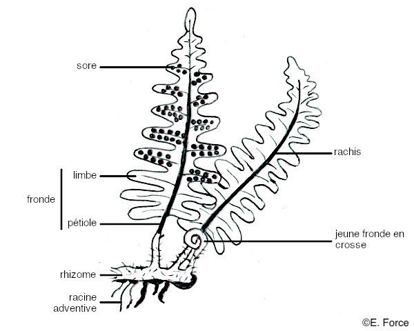
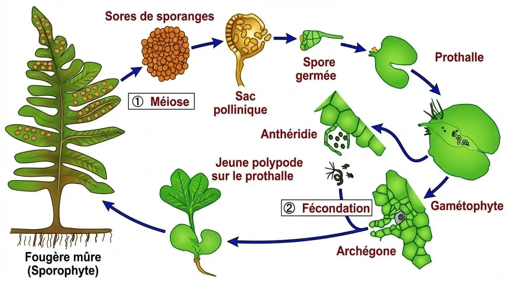
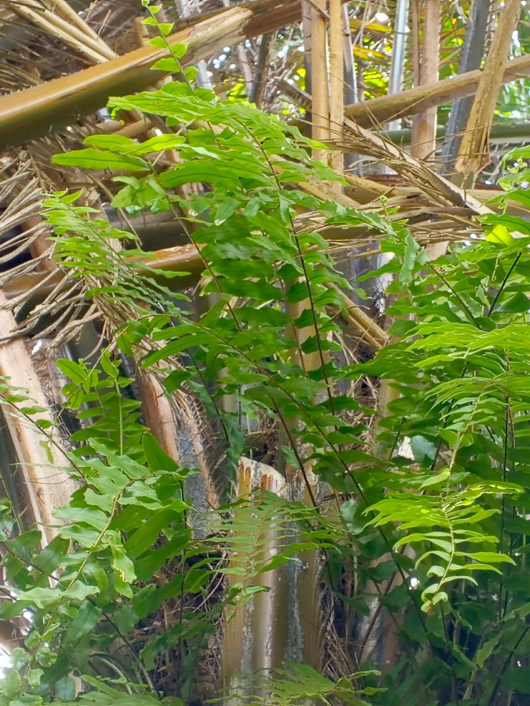

Fougères
Les premières plantes vasculaires
Appareil végétatif
- Frondes : grandes feuilles souvent découpées qui captent la lumière et portent les spores.
- Rhizome : tige souterraine horizontale qui permet à la fougère de se propager et de stocker des réserves.
- Racines : vraies racines qui absorbent l’eau et les sels minéraux (contrairement aux mousses).

Reproduction

Observation sur terrain

Espèce : fougère, Davallia sp.
Milieu : Ombre, humide,sol
GPS : 6.8909793 ; -5.225845
Date : 21/11/2026